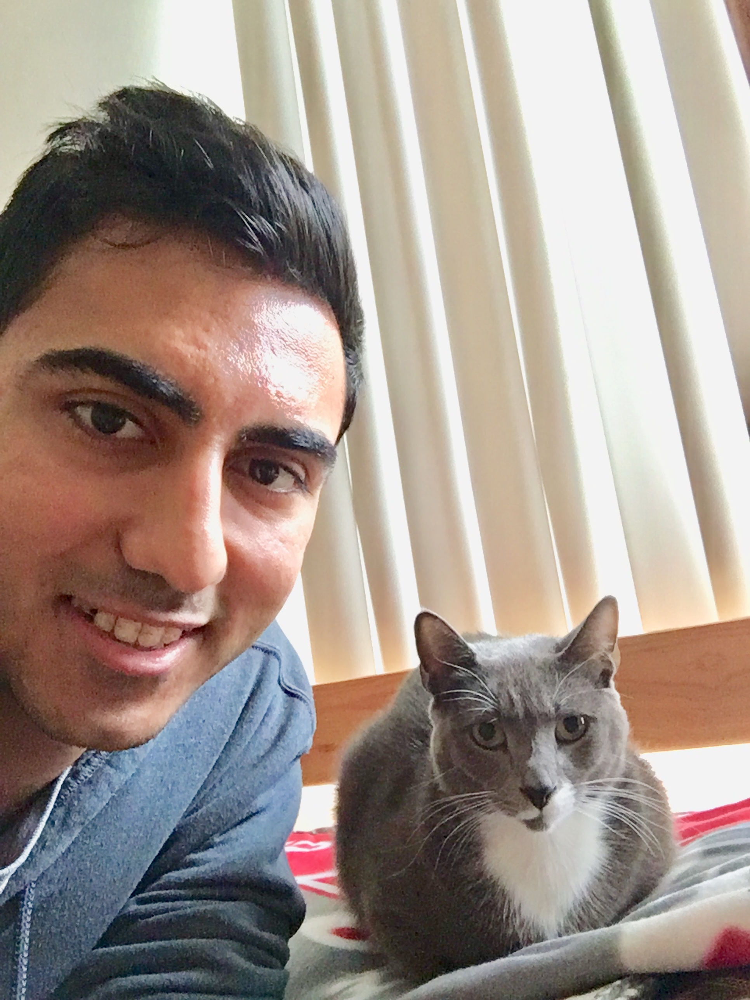

My name is Afnan Sultan. I am a Senior Computer Science student seeking graduation in Spring 2020. Upon graduation, I plan to work in the industry as a full-stack developer for a cause I care about. I enjoy programming, and like to think of myself as a problem solver. One cool fact about me is that I participated in not only the IEEE Extreme Competition, I took 13 students down to Miami to compete in the ACM International Collegiate Programming Contest. Currently, I intern at a company called Spinspire, a consulting and training company emphasizing Drupal and web development. I plan on obtaining another internship before graduation to crystallize my abilities, and to learn new ones.
I was born in Orange Park, Florida. I am the first son to parents originally from Pakistan. I speak English, Urdu, and a little bit of Spanish and Punjabi. After college, I would like to work in the industry, travel, and possibly return to an academic institution for a Master's degree (especially if my future employer is willing to subsidize it). I would also eventually like to start a family. I love Florida and hope to stay in the Sunshine State. Click here to learn more about Urdu.
I enjoy spending time with friends and family. They are the most important, and should always be kept by your side. I also have a pet cat named Solomon. However, everyone just refers to him as "Billi," which means "cat" in Urdu/Hindi. During the Spring Semester, my cousins and I took a trip to Universal after not being able to see each other for years. Above is a picture from the trip, and below is me spending time with my kitty.
Two more hobbies of mine include recreational weightlifting and jogging. Not only is cardiovascular activity great for your heart, it is a great way to relieve stress and wind down after a long day. Strengh training is not as important, but provides utility, possibly aesthetics, and a means to protect oneself in situations such as an unexpected violent confrontation. I recommend all students find regular time to exercise, as there are numerous health benefits associated with anaerobic and aerobic activities.
My main education goal currently is to simply graduate with a Bachelor of Science with a Concentration in Computer Science. I am taking advantage of UNF's Computing department, and would like to explore areas of Computing I have not touched, such as Databases, Artificial Intelligence, Machine Learning, and databases. In the future, I plan on either returning to UNF for a Master's degree in Computing and Info Science, or earning it at another institution in Florida.
Regarding a master's degree, I have been advised by Dr. Asaithambi to get it earlier rather than later. Work experience is also important, and I would prefer to work for at least a year before seeking another academic endeavor. That way, I will have experience (and more knowledge that a degree itself cannot provide, which could also make things smoother. Here is more information regarding a Master's degree. Below is a brief list of diplomas and degrees I am working towards.